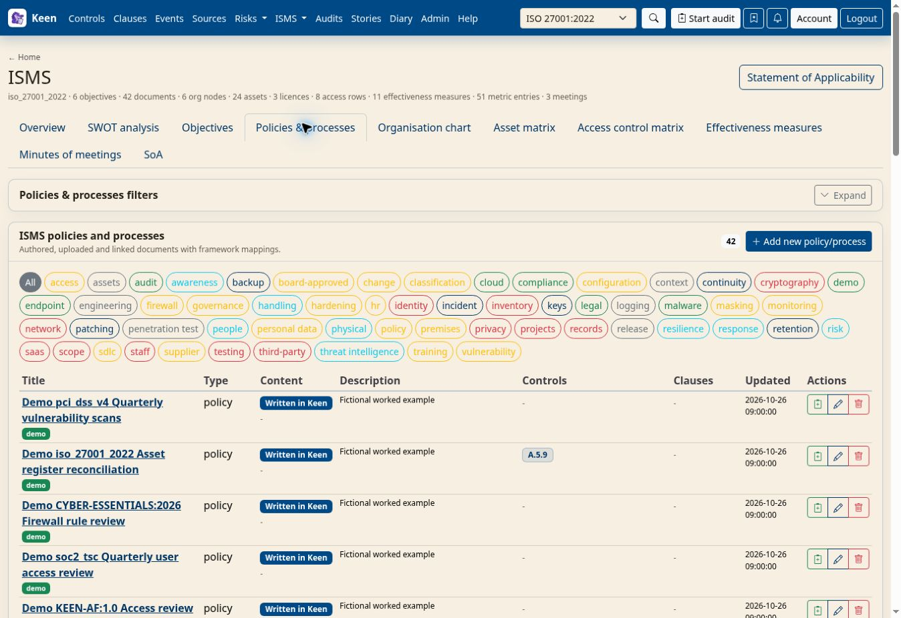
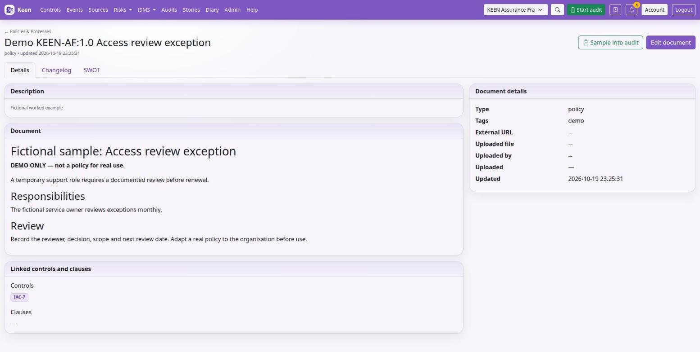

Using Keen
Policies, processes and documents
Chapter 10 of 17
Policies, processes and documents
A policy can live in Keen, as an uploaded file, or in another document system. Either way Keen keeps a document record that gives it a title, type, folder, tags and links to controls and clauses, so it takes part in the management system. This chapter shows the three content modes and how history is kept.
Organise documents and preserve their history


Two screens share the same records. ISMS → Policies & processes has the write, upload and link form. The Documents workspace adds folder browsing, the text editor, revision history and comments.
- Create folders under the intended parent. A simple structure such as Governance, People, Operations and Reviews works well; control links connect material across it.
- Create a document with a title, type, folder and tags, and a short description of its purpose. Link the relevant controls and clauses.
- Choose the content mode: Write in Keen, Upload a file or Link to a URL.
- Save, reopen and read the actual content. Check an uploaded file is the right one; use headings and lists in written text so responsibilities and procedures are easy to find.
- For text written in Keen, each save of changed content creates a numbered revision. Open Revision history in Documents to preview earlier content and its checksum.
- Use folders, types and coloured tags to keep current material findable, and check links after moving a document.
What is versioned. Native text has revision history. File uploads and external URLs do not: a replacement upload changes the current file, and an external page can change at any time. When you must prove which version was reviewed, keep an explicitly versioned record or a captured audit artefact.
Comments are for discussion; a comment is not an approved revision. Record staff acknowledgement of a policy in People assurance records with the supporting evidence. If someone else saved first, Keen refuses the stale save: copy your text somewhere safe, reload and reconcile.
Write, upload and link policies and procedures
The record is separate from the content it refers to, which is what lets the three modes coexist. Pick the one that matches where the text is maintained.


Write a policy directly in Keen
- In ISMS → Policies & processes, create a document with a meaningful title, type, purpose, folder and tags.
- Select Write in Keen and write in the editor. For a policy, a useful structure is purpose, scope, responsibilities, requirements and review arrangements.
- Select the relevant clauses and controls, save, and open the document detail to check the rendered text and relationships.
- Continue writing in the Documents workspace: pick a folder or search by title, tags or description, edit, save.
- Open a version in Revision history to view its saved content and SHA-256 checksum. Selecting an old version opens a preview and leaves the current document unchanged.
- Use Comments for discussion, and record formal approval the way your organisation's review process requires.
Upload an existing document
Select Upload a file, choose the file and save. Open the saved detail page to check the filename, uploader, upload time and the downloadable file; Keen records the stored file's size and checksum. Files up to 100 MiB are accepted, and the supplied nginx configuration allows the same; another reverse proxy may impose a smaller limit.
Link a document maintained elsewhere
Select Link to a URL and enter the address, then add the title, description and control and clause links as for any document. Check the URL with an account typical of its intended readers, who also need permission in the external system.
Going deeper: BookStack and switching content modes
When the BookStack ingester is enabled, ISMS → Policies & processes → BookStack pages & sections lets you select a page or section, associate it with an ISMS document and a control or clause, and keep a snapshot as audit evidence. Document management permissions govern capture; readers can review retained snapshots.
The content selector controls what you edit. When you switch a record between native text, upload and link, check the saved detail: the record can keep file metadata from an earlier upload.